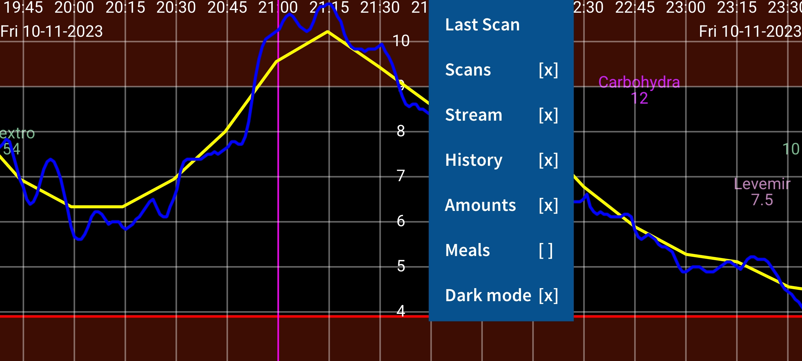
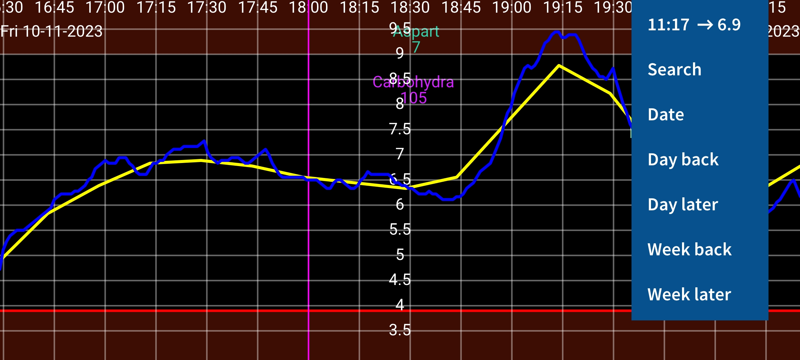
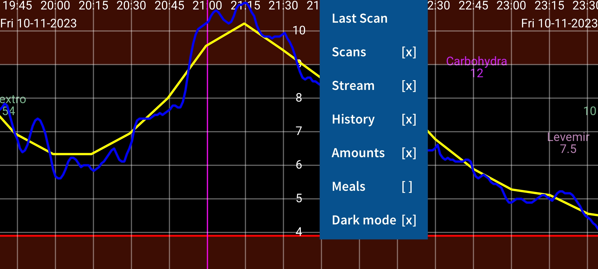
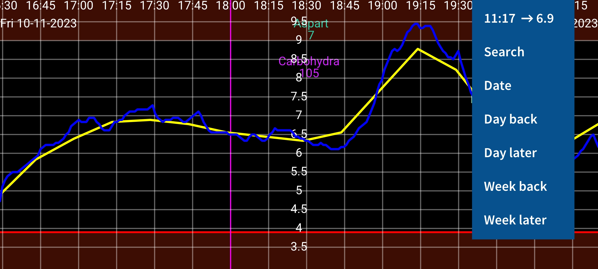

Juggluco is an applet for the control of blood glucose by people with diabetes. It can scan Freestyle libre (0 and 2) sensors (via NFC) and receive (via Bluetooth) glucose values from Freestyle libre 2 and 3 sensors.
As the program is run for the first time, you can (after initialization) scan a Freestyle Libre 2 sensor by holding it against the NFC sensor in your smartphone. Hereafter Juggluco will try to get a Bluetooth connection with Freestyle Libre 2 sensors and receive every minute a glucose value without scanning.
To take over an activated FreeStyle Libre 3 sensor, you need to specify the Libreview Account information you used to activate the sensor in settings->Libreview, press "Get Account ID" and wait for the Account ID to arrive before scanning.
The program contains four menus; by touching on an empty part of the display you can open a menu. Touch on the left fourth of the screen opens the left menu, the left side of the middle part opens the second menu and the right part of the middle opens the third menu and the right fourth of the screen the fourth menu.
Menu 4: Movement (right)
|
15:10 ↗ 93 |
|
Date |
|
Day back |
|
Day later |
|
Week back |
|
Week Later |
By moving left and right over the screen you can move the curve left and right. You can also move by using the movement menu on the right. Use Date to select a date, Search to search for glucose values and entered numbers. The first item of the right menu is the current time and by selecting it you jump to the right of the graph (now).
If manually scale Glucose is set in Settings, moving up and down in the upper part of the screen changes the maximum of the graph, in the lower part of the screen it changes the minimum. If Manually scale Time is set in settings, you can increase or decrease the amount of time displayed on the screen by changing the distance between two fingers.
Menu 3: Display
|
Last Scan |
|
Scans [x] |
|
Stream [x] |
|
History [x] |
|
Amounts [x] |
|
Meals [ ] |
|
Dark mode [x] |
The right of the middle menu contains display options. To view the last scan, touch the first item. A cross after Scans means that scans are displayed in the graph. A scan is the current glucose value you get when you scan a Libre 0 or 2 sensor. Scanning also transfers 15 minutes measurements of the last 8 hours from sensor to smartphone. Display of these values can be controlled by touching History. Libre 3 sensors send the history values by Bluetooth and they are every 5 minutes. Stream stands for glucose values send every minute via Bluetooth from a Freestyle libre 2 and 3 sensors to this applet.
You can enter all kind of numbers (with whatever label you like) to document you insulin, carbohydrate and activities. They are displayed at fixed height in the glucose graph at the specified time and date. Touching on points in the graph or an entered number gives information about that item. You can edit an entered number by long touching it. Editing is also possible via the number list in the left middle menu and touching the corresponding data element. Amounts determines the display of entered numbers. In Settings, you can specify which labels you like to use for these numbers. Above one of the numbers the corresponding label is shown.
Menu 2: Left of middle
|
New Amount |
|
List |
|
Float [ ] |
You can enter these numbers by touching New Amount in left of the middle menu. Export saves data in .tsv (tab separated values) format to a file. Mirror makes it possible to send data via IP/TCP to this app running on a different device to display the same information. List gives a list of the entered numbers. If Juggluco has received enough glucose values via Bluetooth, you can see some statistics by touching Statistics. It shows the percentage of the measurements in certain glucose ranges, the Glucose Management Indicator (a predictor of HbA1c), glucose variability and a summary graph showing the glucose value below which 100%,95%,75%,50%,25% and 0% of the values lie at each moment of the day. In Talk you can make Juggluco speak out incoming glucose values, touched elements of the graph or messages. Float turns on Floating Glucose. A glucose value present on the screen above other apps. In Settings you can change its color and size.
Menu 1: Left
|
System UI [ ] |
|
Menus [ ] |
|
Close |
In the left menu, you can find Settings, to set the glucose unit to mmol/L or mg/dL, to specify labels, set glucose alarms and medication reminders and display ranges. System UI determines if android controls and status bar are shown. In Watch you can specify Juggluco to send data to all kinds of smartwatches. In Sensor, you can see how the connection with the sensor is going. Touch Menus to show all the mentioned menus at the same time in a way that can be read by talkback. Close can be used to exit Juggluco.